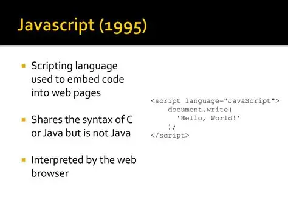
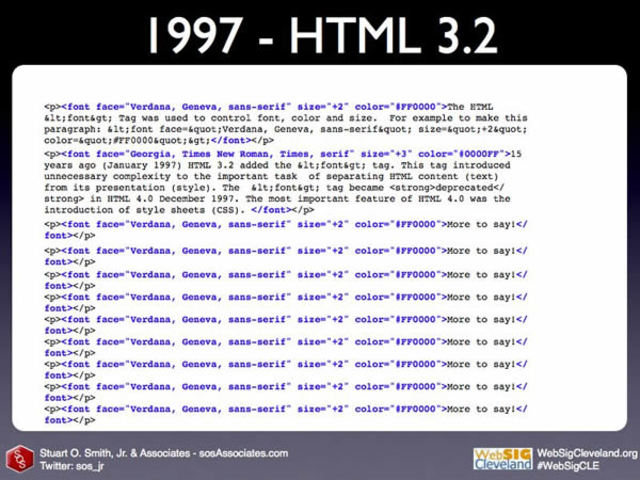
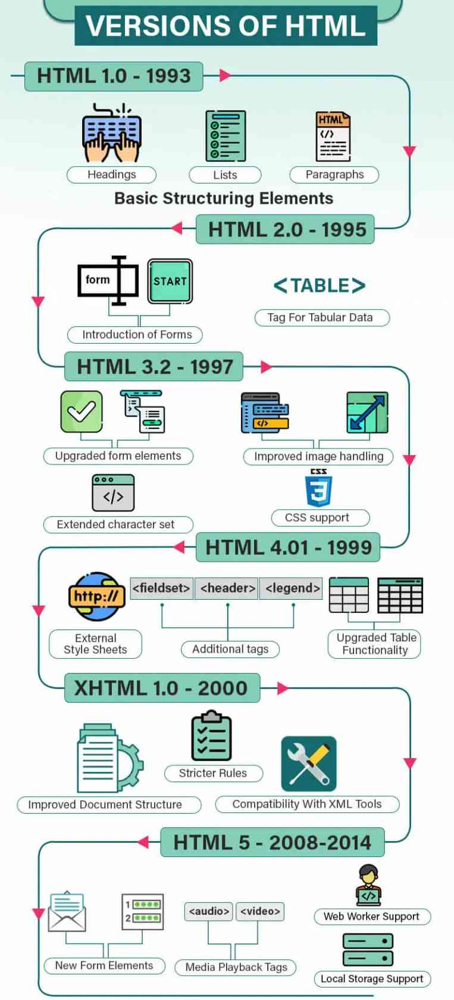

1991 La Web empieza
Las primeras paginas solo tenian texto y enlaces. Era solo para compartir informacion entre cientificos.
1995 HTML 2.0
Se creo la primera norma oficial de HTML. Reunio todo lo que se usaba en ese momento.

1997 HTML 3.2
Aparecieron las tablas. Se podia poner contenido en columnas y texto al lado de imagenes.

1999 HTML 4.01
Llego CSS. Se separo el contenido del diseño para poder poner colores y fondos.

2014 HTML5
Llegaron etiquetas nuevas como header, nav, main, section, footer, video y audio.
Que cambio entre versiones
| Version | Una caracteristica | Un uso posible |
|---|---|---|
| HTML 3.2 | Tablas | Mostrar tabla de posiciones de Emelec |
| HTML 4.01 | Hojas de estilo CSS | Poner fondo azul para pagina de Emelec |
| XHTML 1.0 y 1.1 | Sintaxis estricta tipo XML | Evitar errores de etiquetas sin cerrar |
| HTML5 | Etiquetas header, section, video | Poner un video de un gol del Real Madrid |
Para mi primera web me resulta mas util HTML5 porque puedo organizar mejor la pagina con header, section y footer y poner video sin plugins.